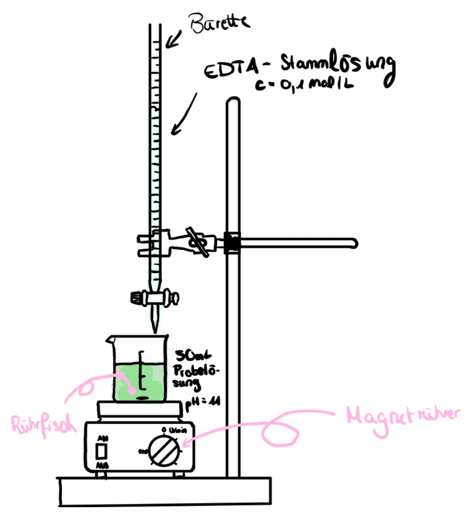
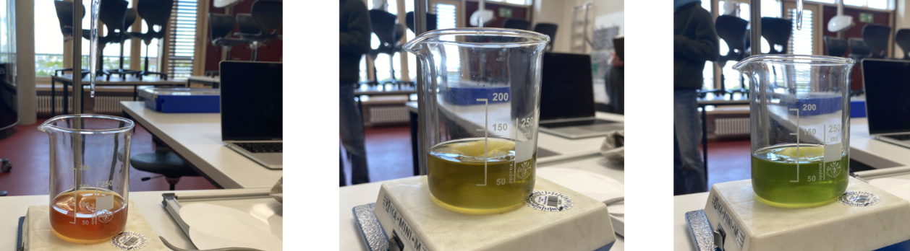

Die Zielsetzung dieses Versuchs befasst sich damit, eine in Wasser gelöste Calcium Tablette nach der enthaltenen Menge von Calcium zu prüfen und den errechneten Wert mit dem auf der Packung angegebenen Wert zu vergleichen. Dieses Experiment wird als quantitativer Nachweis bezeichnet, da die Quantität also die Menge an Calcium ermittelt wird.
Experiment: Quantitativer Nachweis von Calcium
Zielsetzung
Theoretische Grundlagen
Chelatkomplexe/Metallkomplexe:
Im Ablauf einer Komplexbildungsreaktion reagieren die Metall-Ionen (hier. Calcium-Ionen) und
Komplexbildner (hier: EDTA) zu einem Komplex, aus einem zentralen Metall-lon, um welches
herum sich Liganden befinden. Hierbei handelt es sich um ein Komplex, namens
Chelatkomplex, welches durch die Titration gebildet wird.
Rechnen mit molarer Masse - Benötigte Formeln:
Nutzen in Verbindung mit dem Experiment:
In dem wir die Probelösung mit der EDTA-Maßlösung titrieren, können wir das benötigte
Volumen von EDTA in mL genau ablesen, welches benötigt wird, um einen Farbumschlag zu
erzeugen bzw. bei dem die Calcium-Ionen die besondere Reaktion, namens
Komplexbildungsreaktion, eingehen. Aus dem Volumen der EDTA-Maßlösung und der
bekannten Stoffmengenkonzentration des EDTAs kann die Masse des enthaltenen Calcium
berechnet werden
Stoffmenge:
- Die Stoffmenge gibt Auskunft über die Teilchenanzahl einer vorliegenden Stoffportion
- 6,022 • 1023 Teilchen definiert man als ein Teilchen (Avogadro-Konstante)
- Die Einheit der Stoffmenge n gibt man in mol an
Klärung der Variablen:
- cEDTA-Maßlösung: Stoffkonzentrationsmenge der EDTA-Teilchen (in mol/L)
- nEDTA-Maßlösung: Stoffmenge der EDTA-Teilchen (in mol)
- VEDTA-Maßlösung: Volumen der benötigten EDTA-Maßlösung (in L)
- MCalcium: molare Masse Calcium (in g/mol)
- mCalcium: Masse Calcium (in g)
- nCalcium: Stoffmenge Calcium (in mol)
Formeln:
- Stoffmengenkonzentration: \( c_{EDTA-Maßlösung} = \frac{n_{EDTA-Maßlösung}}{V_{EDTA-Maßlösung}} \)
- Molare Masse: \( M_{Calcium} = \frac{m_{Calcium}}{n_{Calcium}} \)
Materialien
- Erlenmeyerkolben
- Pipette
- Bürette
- pH-Wert-Messgerät
Chemikalien
- 50mL Probelösung (nach Angabe Calcium-Tablette in Wasser lösen und 50 mL entnehmen)
- 1mL Ammoniaklösung
- Eriochromschwarz T (Indikatortablette)
- EDTA-Maßlösung (c = 0,1mol/L)

Ammoniaklösung verursacht schwere Verätzungen der Haut und schwere Augenschäden

Entweichendes Ammoniakgas reizt die Atemwege und Schleimhäute stark

Ammoinak ist extrem giftig für Wasserorganismen mit langfristiger Wirkung
Schutzbrille und Schutzkleidung tragen. Chemikalien fachgemäß entsorgen, micht in den Abfluss geben. Nur in gut durchlüfteten Räumen oder im Abzug durchführen.
Durchführung
- Calciumtablette nach auf der Packung angegebenen Verhältnis in Wasser lösen
- Lösung filtrieren
- 50 mL entnehmen → Probelösung
- Probelösung in Erlenmeyerkolben oder Becherglas geben
- konzentrierte Ammoniaklösung in Probelösung hinzufügen, bis der pH-Wert 11 beträgt, und gut umrühren
- Erichromschwarz T in Form von Indikatortablette in die Probe geben
- Probelösung mit 50 mL EDTA-Maßlösung (c = 0,1 mol/L) titrieren (Anfangswert an der Bürette und Merken (Idealfall: bei Null anfangen; weniger rechnen))
- Farbumschlag beobachten
- Direkt danach Bürette zudrehen
- Wert des verbrauchten Volumen von EDTA-Stammlösung an der Bürette ablesen
- Stoffmenge von Calcium berechnen
- Errechneter Wert mit auf der Packung angegebener Menge vergleichen

CC BY-SA 4.0" data-source="Eigenes Bild" data-author="Amelia D." data-title="Versuchsaufbau Quantitativer Nachweis">Beobachtung
Schon bei der Hinzugabe von der Ammoniaklösung und dem Erreichen des richtigen pH-Werts färbt die Erichromschwarz T-Tablette die Probelösung in einer rötlichen Farbe, statt dem vorherigen braun-grün.
Während der Titration wird die Farbe erst orange, dann gelblich, bis sie dann recht schlagartig ein leuchtendes grün erreicht. Anschließend kann beim Zudrehen der Bürette der Wert von 23,5 mL EDTA-Stammlösung abgelesen werden.

CC BY-SA 4.0" data-source="Eigenes Bild" data-author="Amelia D." data-title="Beobachtung Quantitativer Nachweis">